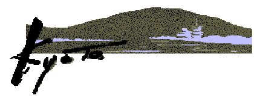
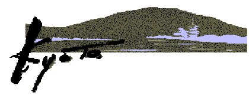
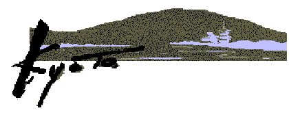
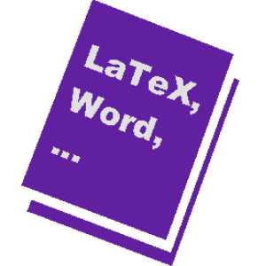

in
inPreliminary Announcement
in
Preliminary Announcement
The 20th International Conference on Software Engineering
April 19~25, 1998
Kyoto International Conference Hall, Kyoto, JAPAN

Sponsored by
What's new?
Joint Workshops are announced now (click here for announce summary)!IWSSD-9 / ISORC'98 . PDSE '98 / Int'l Workshop on the Principle of Software Evolution / Int'l Workshop on Component-Based Software Engineering / Aspect-Oriented Programming Workshop / Workshop on Software Engineering over the Internet / Engineering Hypertext Functionality for Future Information Systems / Precise Semantics for Software Modeling Techniques / Workshop on Human Dimensions in Successful Software Development / Workshop on Software Engineering Education / MSE'98
 |
See Detailed Information (Call For Papers)! | Download PDF file of CFP! |
|
|
Brief description in Japanese | Download ICSE98 Publication Format! |
ICSE's twentieth birthday affords an opportunity to reflect on profound changes of the past two decades.
Since ICSE's founding, politics and technology have converged to shatter once formidable barriers to international cooperation. The collapse of the Berlin Wall symbolizes the end of the Cold War, and links in a Web page are a metaphor for our enhanced capacity for global information exchange.
In this spirit, we have worked hard to ensure that ICSE98 will see an unprecedented increase in the level of international participation and provide an opportunity to highlight the interests and accomplishments of members from the Asian-Pacific region. Yet our outreach must extend beyond geography.
As we continue to build bridges to other software disciplines, researchers and practitioners in allied fields will benefit from an understanding of the contributions that software engineering can make to their work. In turn, we must address their problems in our research. New collaborations between academia and industry will also enrich ICSE98 and our profession as a whole.
I hope you will take advantage of this unique opportunity to meet new colleagues, exchange ideas, and explore the nearly limitless possibilities that lie ahead. Join me in Kyoto for ICSE98 and share the excitement that comes from forging new links.
For more information:
| General Chair |
Koji Torii (NAIST) |
torii@is.aist-nara.ac.jp |
|
Technical Committee |
Takuya Katayama (JAIST) |
katayama@jaist.ac.jp |
|
|
David Notkin (U.of Washington) |
notkin@cs.washington.edu |
|
Program Committee |
Kokichi Futatsugi (JAIST) |
kokichi@jaist.ac.jp |
|
|
Richard Kemmerer (UCSB) |
kemm@cs.ucsb.edu |
|
Asia Pacific |
Dines Bjorner (UNU/IIST) |
db@iist.unu.edu |
|
|
Koichi Kishida (SRA) |
k2@sra.co.jp |
|
Operating Committee |
Norihisa Doi (Keio U.) |
doi@keio.ac.jp |
|
Treasurer |
Seishiro Tsuruho (NTT Data) |
tsuruho@plan.rd.nttdata.co.jp |
|
Secretariat |
Masaki Koyama (NAIST) |
koyama@itc.aist-nara.ac.jp |
Corporate Sponsors(Tentative):